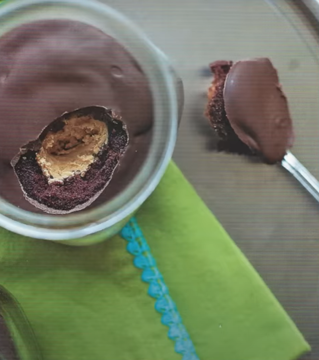

Peanut Butter Cup Cupcakes in Jars

Description
A yummy chocolate cake treat with a creamy "peanut butter surprise" at its center. In a jar! It's chocolate and peanut butter. What's not to love?
Ingredients
- 3/4 Cup Cocoa powder
- 1 and 1/2 Cups Granulated sugar
- 2 Cups All-Purpose Flour
- 1 teaspoon Baking powder
- 1 and 1/2 teaspoons Baking soda
- 1/2 teaspoon Salt
- 2 Eggs
- 1 Cup Vegetable oil
- 3/4 Cup Buttermilk
- 1 teaspoon Vanilla extract
- 3/4 Cup Hot coffee
- 3/4 Cup (Or more) Creamy Peanut butter
- 1 and 1/2 Cup Confectioners’ sugar
- 8-10 Ounces of Milk or Dark Chocolate
- 12 8-Ounce Jars
Steps
- Preheat the oven to 350 degrees.
- In a large bowl, sift together the granulated sugar, baking soda, baking powder, salt, cocoa, and flour.
- In a separate bowl, beat together eggs, oil, buttermilk, and vanilla extract.
- Mix the wet ingredients into the dry ingredients. Mix in hot coffee until incorporated.
- In a separate bowl, mix together peanut butter and confectioners’ sugar.
- Roll peanut butter mixture into 12 balls, each 1-2 inches in diameter.
- Scoop 3 and 1/2 tablespoons of batter into the bottom of each jar.
- Place a peanut butter ball into each of the jars.
- Cover each peanut butter ball with 2-3 tablespoons of batter.
- Place jars 2 inches apart on a baking sheet and bake for 18-20 minutes, or until the tops spring back when touched.
- Melt chocolate in a microwave-safe bowl.
- Carefully remove jars from the oven. Spoon melted chocolate onto each of the cakes.
- Let cakes cool and chocolate topping harden. Serve at room temperature. (Or don’t, I’m not your mother.)